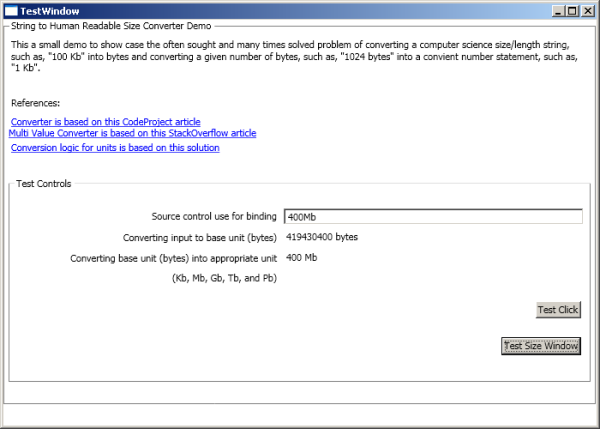
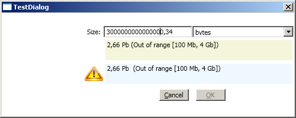
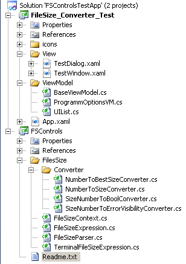

Introduction
The Windows Presentation Foundation (WPF) in C# contains a few technologies and interfaces to link eahm bind controls and properties to each other. Users can enter
a value and make it (or some feedback of it) appear somewhere in the GUI. This article presents a way of checking for valid input values
via ValueConverter and MultiValueConverter in XAML.
Background
The background of this article is an application that uses Ionic
zip file handling with the file splitting or file spanning feature. This feature lets the user create a series of zip files where each file has roughly the same size.
A user can, for example, create a series of 5 files, each having a maximum size of 100MB. This can be useful if the total size of files can be very large
but if there is an upper bound for the size of individual files.
The upper bound-file spanning/file size problem arises when someone wants to store the zipped file on a media with limited size (e.g.: USB stick), or if the compressed
data size exceeds 2GB (on Windows XP) or 4GB (on Vista/Windows 7).
This article showcases one way to solve this problem in a flexible manner. The user can enter memory sizes in any unit he wants (e.g.: xxx bytes, KB, MB, GB, TB, or PB)
and the software verifies whether the entered data is valid in terms of the syntax and the actual value (in between a range).
The valid memory range in my sample test application is set to anything between 100MB and 4GB (including these values) as can be seen in Figures 1 and 2.

Figure 1: A sample screenshot of the TestWindow in the included test application

Figure 2: A sample screenshot of the TestDialog in the included test application
The outputs in Figures 1 and 2 show different development stages in which entered values are converted and displayed with different feedbacks.
The TestWindow in Figure 1 shows the first development step where a user can enter a string like "100GB" or "1024 KB" and the program converts
this string into a bytes value in the TextBlock just below the main input TextBox control. The second TextBlock
with the appropriate unit (below the first TextBlock) shows a converter output from the first bytes TextBlock.
The aim of these two outputs is to visualize the conversion results as a user types and re-types values.
The first output was needed, because checking whether a value is inside a given range requires conversion to a value of the smallest possible unit (that is bytes in this case).
And the second label was useful because a user should not have to read a message like: "Please select a value smaller than 10048 MB" when the upper bound was exceeded.
Therefore, an appropriate size converison is required for output purposes.
But we are getting ahead of ourselves. Let us look at the project and develop the solution from bottom to top.
Using the code
StyleCop
I use StyleCop in my projects to make the code readable in a uniform
way. So, you can either download and install StyleCop, or edit/remove the corresponding entries in each .csproj file, should you get an error when compiling the project:
<Import Project="$(ProgramFiles)\MSBuild\StyleCop\v4.5\StyleCop.Targets" />
Project structure
The image in Figure 3 shows the rough structure of the project. There is a FileSize_Converter_Test project and a FSControls project.
The former project is what we need to Set as Startup Project in Visual Studio if we want to test the FSControls functionality.
The FSControls library contains the parser and converter functions documented in this article. This DLL can be included and consumed in other projects.

Figure 3: The project structure of the submitted source code
The core of the FSControls project are the FileSizeContext, FileSizeExpression, FileSizeParser,
and TemrinalFileSizeExpression classes.
The FileSizeExpression class defines the fundamentals of each class that represents a unit. Each of the classes:
BytesFileSizeExpressionKbFileSizeExpressionMbFileSizeExpressionGbFileSizeExpressionTbFileSizeExpression
derived from TerminalFileSizeExpression in the FileSizeContext class, represents a corresponding unit (bytes, KB, MB, GB...) of memory sizes.
The ConvertUnparsedSizeToBytesInt function in the FileSizeContext class can be used to check whether conversion of a string containing
something like "100MB", "10 bytes", or "1024 GB" into an int number of bytes can be successful or not. Review this function
if you want to have a simple reference for the required conversion process.
public static bool ConvertUnparsedSizeToBytesInt(object value,
out ulong numberOfBytes,
out string[] sInputComponents)
The TerminalFileSizeExpression class derives from the FileSizeContext class and defines the Interpret method.
The Interpret method checks if ThisPattern of the current class (e.g.: "GB") can be matched to the end of the string,
and converts the value into the NextPattern of that class (e.g.: "MB"), if that was the case.
The FileSizeParser class is also derived from the TerminalFileSizeExpression class and overrides its own version
of the Interpret method. In this method, we cycle through each unit (form top "TB" to bottom "bytes") and convert
"down to next unit" if the current unit was matched with the input string stored in the value object:
public override void Interpret(FileSizeContext value, out string[] strComponents)
{
strComponents = null;
foreach (FileSizeExpression exp in this.expressionTree)
{
string[] strOutComponents = null;
exp.Interpret(value, out strOutComponents);
if (exp.InterpretOK == true)
{
if (this.InterpretOK == false)
strComponents = strOutComponents;
this.InterpretOK = true;
}
}
if (this.InterpretOK == false)
this.InterpretAsBytes(value);
}
The call to the InterpretAsBytes method is needed because a user might enter "1000 bytes" and we would like to work with that input.
In this case, a "down" conversion is not possible but the input is still valid so we use this method to resolve that input.
Converter
Normally, converters live in a resource in a Window (or UserControl) and are referenced via their x:key property:
<Window.Resources>
<local:NumberToBestSizeConverter2 x:Key="MyConverter" />
</Window.Resources>
But this gets tedious pretty soon as one starts using a few converters. This implementation is based on an alternative scenario where converters are derived from
the MarkupExtension class. This derivation allows us to use the resulting converters directly in the XAML (without explicit reference to an existing resource).
IValueConverter
Samples of IValueConverter implementations can be found in the FSControls/FileSize/Converter
package. Each file in this package contains two classes, an IValueConverter and
an IMultiValueConverter (see next section) implementation for the same purpose of conversion.
The IValueConverter interface appears complicated and difficult to understand at first sight. But its purpose is really just to take an input value
and convert it into an output value. This is probably best verified if you insert a breakpoint at the beginning of the Convert function and step through
it when it is used from within the XAML discussed below.
The IValueConverter in the NumberToBestSizeConverter class converts, for instance, a simple string like "1024 KB" into a human
readable output string "1 MB". The NumberToBestSizeConverter2 class does the same but it also accepts an optional parameter (an array[2]
of type ulong) to determine whether the entered value is within the Min-Max range of the supplied array.
IMultiValueConverter
An IMultiValueConverter is really just an IValueConverter that accepts an array of objects as input and outputs a converted object.
The NumberToBestSizeConverter3 class does a similar job as the NumberToBestSizeConverter2 class, except it prints an output value only,
if there is a syntax error, or if the suggested human read-able string does in fact differ from the input string.
This is used in the TestDialog class (see further below) to visualize a feedback only:
- if something's wrong, or
- if the user actually entered "100000 bytes" hoping that the software would tell him how many GBs this might be.
The NumberToBestSizeConverter3 class is derived from IMultiValueConverter to accept an array of input objects.
This was required to support the selection of a unit via combobox and the input of the value via textbox.
TestWindow
Review the XAML in the TestWindow class to understand how the input string from the textbox is converted into a bytes representation (NumberToSizeConverter)
and from there into a "BestSize" representation (NumberToBestSizeConverter). Take a note of the Window.Resources tag:
<Window.Resources>
<x:Array Type="{x:Type sys:UInt64}" x:Key="MinMaxValues">
<sys:UInt64>209715200</sys:UInt64>-->
<sys:UInt64>4294967296</sys:UInt64>-->
</x:Array>
</Window.Resources>
This array of UInt64 objects is used to determine the range of acceptable values via ConverterParameter of the corresponding
Converter binding statements. For example, like so:
<TextBox x:Name="txtBytes"
IsReadOnly="True" BorderThickness="0" Margin="3"
Grid.Column="1" Grid.Row="1" HorizontalAlignment="Left" Width="350">
<TextBox.Text>
<Binding ElementName="txtInput" Path="Text" Converter="{local:NumberToSizeConverter}"
ConverterParameter="{StaticResource MinMaxValues}" />
</TextBox.Text>
</TextBox>
Notice the converter attached to the IsEnabled property of the Test Click button. It makes sure the button is clickable
only if the entered value is valid and within the defined range.
There is really not much more to say here. Just set a breakpoint in the corresponding convert function of any converter and debug the application, if you are
in doubt of the bindings and all the other mumbo-jumbo here.
TestDialog
The TestDialog class is the second approach on the subject and it features some more advanced items, such as:
- a ViewModel (
ProgrammOptionsVM) to bind to,
- a combobox to enter the size of memory unit with,
- an image that pops-up whenever there is an input error,
- a label that shows only if the "BestSize" differs from input or if there is an error,
- and an OK button that enables only if the entered value is OK.
While all these things might be confusing at first, they are mostly based on different converters, which in turn rely on the objects defined
in the Window.Resources tag in the TestDialog.xaml file.
Here is the sample XAML that controls whether an error image is shown or not:
<Image Source="/FileSize_Converter_Test;component/icons/error.png"
Width="32" Height="32" Grid.Column="0" Grid.Row="2"
HorizontalAlignment="Right" VerticalAlignment="Center">
<Image.Visibility>
<MultiBinding Converter="{local:SizeNumberToErrorVisibilityConverter2}"
ConverterParameter="{StaticResource MockupMinMaxValues}"
Mode="OneWay">
<Binding ElementName="txtInput" Path="Text"/>
<Binding ElementName="cmdMemUnits" Path="SelectedItem.Value.Value" />
</MultiBinding>
</Image.Visibility>
</Image>
The visibility property is bound to a MultiValue converter SizeNumberToErrorVisibilityConverter2. The converter gets its parameters from
the MockupMinMaxValues array of UInt64 values. The actual object[] values to be converted are supplied from the textbox (txtInput)
and the combobox (cmdMemUnits
Take a note of the btnTestWindow1_Click method in the TestWindow.xaml.cs file.
This method shows how the 'Mockup' Windows resources are overwritten (with real objects and their values) at runtime.
The ProgramOptionsVM ViewModel does not have a model. Normally, one would design a model class, for example, ProgramOptions, that would contain
only the properties for selectedMemUnit and selectedSize. This way, that model can be persisted and processed without direct dependency
on the view. But this is omitted in favour of simplification. Instead the trace to the "model" ends in the fields of the ProgramOptionsVM class:
private readonly Dictionary<MemUnit, UIList> mMemUnits;
private MemUnit selectedMemUnit;
private double selectedSize;
The above fields are then exposed and bound to the TestDialog.xaml controls via their corresponding properties.
Points of interest
This project gave me a huge inside on how converters and ViewModels are related to each other and how we can use both of them to interact with each other.
I noticed that each converter can also be realized via a conversion function and output property in the ViewModel class. And sometimes, this may be the way to go,
as well, because the resulting code may be easier to understand and maintain.
I wanted to show off some more novel Converters than the usual bool to Visibility stuff copied from somewhere else. So, there you go. Please let me know about
your thoughts and comments on this.
References
The article is based on the following resources:
History
- 12.12.2011: Initial post.
- 13.12.2011: Updated article to contain a sample on the actual
MultiValueConverter binding used in the source code.
Updated source code to bug fix a problem in the binding of the memory size input value. I wanted to support a floating point value (such as 1.5 GB).
So I changed the SelectedMemSize property to string and compute the actual size of bytes via a separate property (SelectedMemSizeNumberOfBytes)
in the ProgramOptionsVM class.